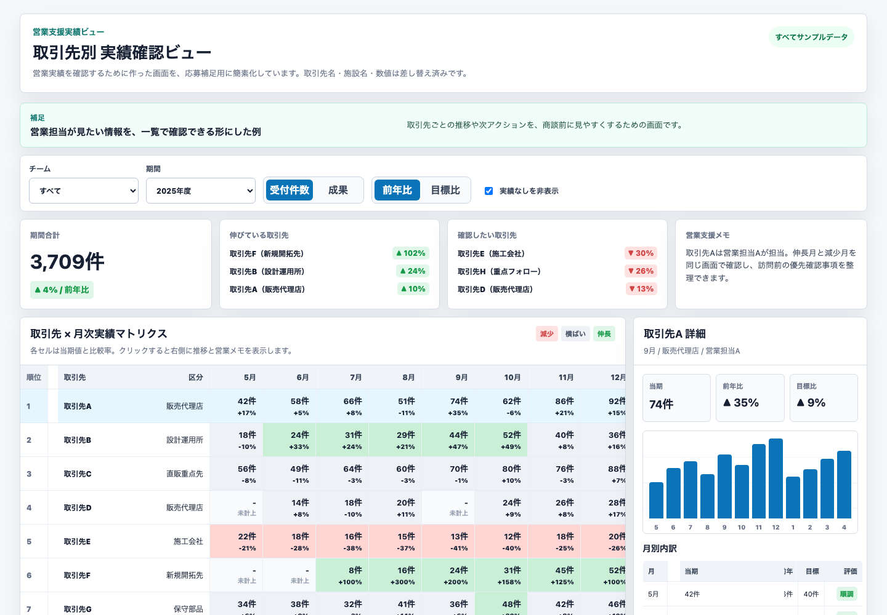
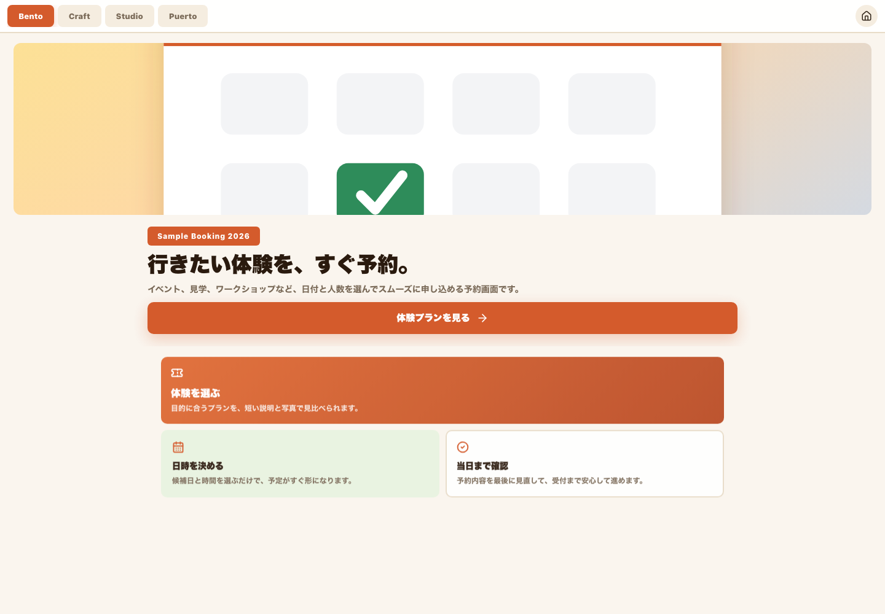
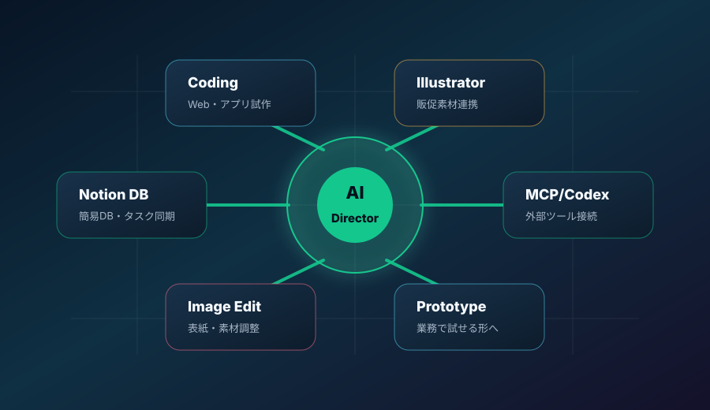
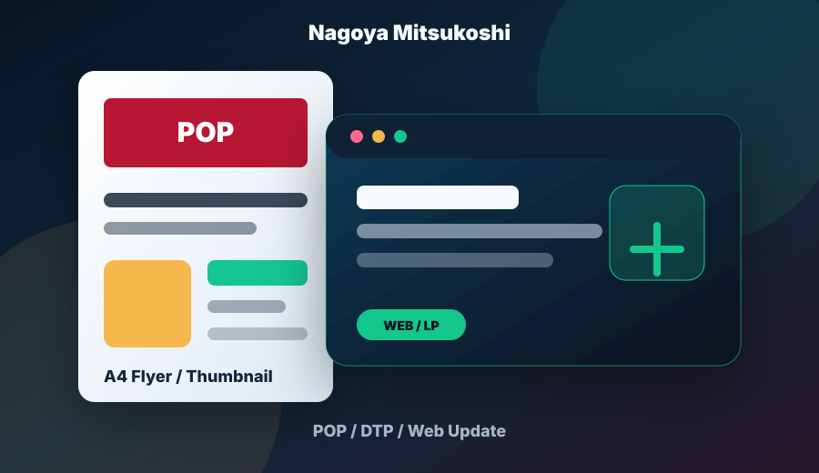
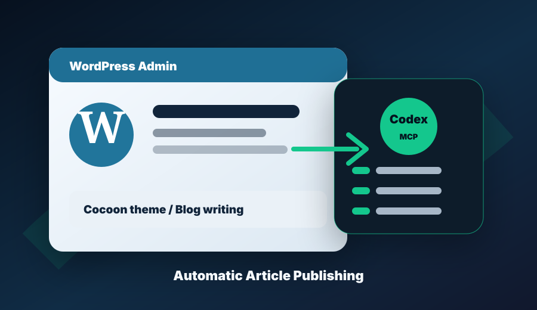

自然検索流入増
+13.2%予約サイトのGA4分析をもとに、改善ポイントを継続的に確認。
販促・接客・運用の現場で見つけた課題を、Web、データ、AIツール、画像編集、GAS、DTP制作まで横断して形にします。 代表実績は詳細ページへのリンクとして整理し、このページは提案資料のようにA4横で印刷できます。
Notionのポートフォリオから要点を抜粋し、詳細はリンク先で確認できるようにしています。

取引先別、月別、前年差、目標比を一画面で確認する営業支援サンプル。

予約トップから完了までの導線設計。認知から行動完了までを整理。

Web問い合わせや資料請求を整理し、FAQやページ改善へつなげる画面。

Notion簡易DB、タスク同期、Illustrator連携、画像編集など、外部ツールをつないだ業務プロトタイプを試作。

館内POP、食品フロア企画、A4フライヤー、サムネイル、Web/LP更新を横断して制作。

Cocoonテーマ導入、ブログ執筆経験に加え、MCPをCodexへ接続した記事投稿自動化まで対応。